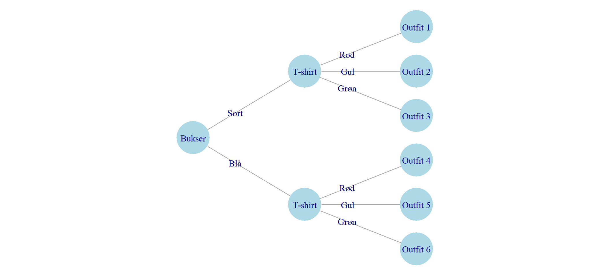

Kombinatorik
Hvad er kombinatorik?
Kombinatorik handler om, hvordan man kan vælge og sammensætte ting. Og om, hvordan man tæller, hvor mange muligheder man har, når man vælger og sammensætter ting.
Her er nogle eksempler:
Hvis jeg på en restaurant kan vælger mellem tre forskellige forretter, tre forskellige hovedretter og tre forskellige desserter, på hvor mange måder kan jeg så sammensætte en menu? (Svaret er \(3 \cdot 3 \cdot 3 = 27\))
På hvor mange måder kan man vælge én elevrepræsentant fra en klasse med 25 elever? (Svaret er \(25\), og det er okay hvis du synes, det var lovlig nemt).
På hvor mange måde kan man vælge et festudvalg på tre personer fra en klasse med 25 elever? (Svaret er \(25 \cdot 24 \cdot 23 = 13800\), og det er okay hvis du syntes det var lidt sværere?)
Hvor mange forskellige pokerhænder findes der, hvis vi ved at en hånd består af 5 kort trukket fra et spil med 25 kort? (Svaret er \(2.598.960\) og det er ret svært at regne ud – men når du er færdig med kapitlet her, er det faktisk ikke så svært.)
Begreberne
Som med meget matematik er en stor del af tricket i kombinatorik at være skarp på, præcist hvad der menes i en eller anden opgave eller problem. Når vi vælger ting, bruger vi for eksempel begreberne med og uden tilbagelægning. Og vi taler om valg, som er ordnet eller uordnet. Hvad betyder det så?
Med tilbagelægning: Det kalder vi det, når vi kan vælge den samme ting flere gange. Nogle gange er det helt klart om det er med eller uden tilbagelægning: Vi kan ikke vælge den samme person til festudvalget to gange. Men når vi blander fredagsslik, kan vi godt tage to stykker af vores yndlingsvingummi. Hvis vi er på restaurant er det lidt mere usikkert hvad reglerne er: Vi kan nok godt få lov til at vælge en dessert både som forret, hovedret og dessert, men det er ikke så almindeligt, og normalt tager vi én forret, én hovedret og én dessert.
Uden tilbagelægning: Det er når vi ikke kan vælge den samme ting flere gange. Vi nævnte festudvalge før, hvor hver person kun kan være med én gang. Det samme gælder for et fodboldhold, der kan kun være én Lionel Messi på holdet. Hvis du laver en hitliste over dine fem yndlingsmusikere, mener vi normalt også fem forskellige, du kan ikke have Taylor Swift på både 1., 2., 3., 4., og 5. pladsen.
Ordet: Handler om, hvorvidt rækkefølgen betyder noget. På hitlisten gør det (normalt) en forskel hvem der ligger nummer 1 og hvem der ligger nummer 5. Hvis man sætter hold til en landskamp betyder det noget om man er på holdet eller ej, men ikke noget om træneren har valgt én som den første eller sidste. (Det er lidt anderledes, hvis man med holdopstilling også mener, hvem der spiller hvilken position. Det er derfor det er vigtigt at være præcis med, hvad man præcist mener, både når man stiller en matematikopgave og når man løser den.)
Uordnet: Det kalder vi det, når rækkefølgen ikke betyder noget. Hvis du blander slik, betyder det for eksempel ikke noget, hvilken rækkefølge du vælger slikket i – det bliver jo alligvel rystet sammen hulter til bulter i posen.
Vi kan lave en oversigt over begreberne i et skema som det her:
| Ordnet | Uordnet | |
|---|---|---|
| Med tilbagelægning | Kombinationslås | Bland-selv-slik |
| Uden tilbagelægning | Holdopstilling | Lotto-tal |
Af skemaet kan vi se, at der på denne måde er i alt fire typer af problemer. Kombinationslåsen, bland-selv-slik, holdopstilling og lotto-tallene er eksempler på de fire forskellige typer.
| Ordnet | Uordnet | |
|---|---|---|
| Med tilbagelægning | \(n^k\) | \(\binom{n+k-1}{k} = \frac{(n+k-1)!}{k!(n-1)!}\) |
| Uden tilbagelægning | \(\frac{n!}{(n-k)!}\) | \(\binom{n}{k} = \frac{n!}{k!(n-k)!}\) |
Tælletræet
Kast med to terninger
Når vi kaster to terninger, får vi forskellige kombinationer afhængigt af, hvilket tal der kommer på hver terning. Her er en oversigt over alle de mulige kombinationer:
| Første terning |
Anden terning 1 |
2 |
3 |
4 |
5 |
6 |
|---|---|---|---|---|---|---|
| 1 | 1-1 | 1-2 | 1-3 | 1-4 | 1-5 | 1-6 |
| 2 | 2-1 | 2-2 | 2-3 | 2-4 | 2-5 | 2-6 |
| 3 | 3-1 | 3-2 | 3-3 | 3-4 | 3-5 | 3-6 |
| 4 | 4-1 | 4-2 | 4-3 | 4-4 | 4-5 | 4-6 |
| 5 | 5-1 | 5-2 | 5-3 | 5-4 | 5-5 | 5-6 |
| 6 | 6-1 | 6-2 | 6-3 | 6-4 | 6-5 | 6-6 |
Som tabellen viser, er der i alt 36 forskellige kombinationer når vi kaster to terninger. Hver kombination er lige så sandsynlig - der er \(\frac{1}{36}\) chance for at få præcis “3-5” eller en hvilken som helst anden bestemt kombination.
De fremhævede kombinationer på diagonalen (1-1, 2-2, 3-3, 4-4, 5-5, 6-6) er de såkaldte “dobbelte” - hvor begge terninger viser det samme tal. Bemærk at der kun er én måde at få hver dobbelt på, mens der er to måder at få andre summer på (f.eks. kan man få summen 5 både som 2-3 og som 3-2).